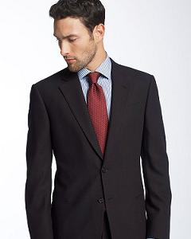
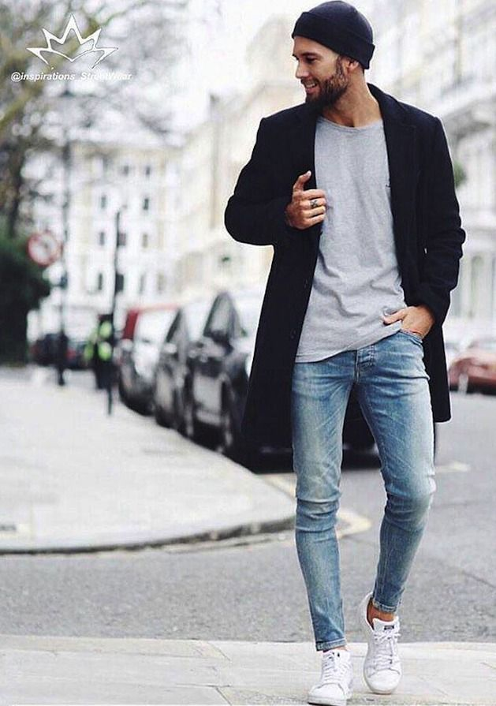
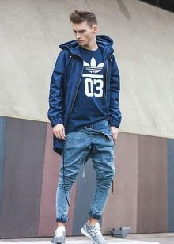

Современное общество диктует требования к внешнему виду и женщин, и мужчин. Речь идёт не столько об офисных дресс-кодах, сколько о призыве раскрыть индивидуальность в гармоничном сочетании внутреннего уклада и наружного облика
Но мужчины зачастую оказываются беспомощными, пытаясь соответствовать духу времени и выглядеть стильно. Трудности вызывает разнообразие стилей, а также коварство женщин, успевших подстроить большую часть трендов под себя, оставив мужчинам совсем мало пространства для маневров
Я решил выделить несколько главных стилей мужской одежды
Офисный
Строгий стиль гардероба выдаёт делового и уверенного мужчину. Официальные наряды подойдут для работы и повседневной жизни. Главные требования к офисным вещам – элегантность, сдержанность в цветах, высокое качество покроя. Офисный мужской стиль одежды ассоциируется с однотонными костюмами классических тонов в сопровождении рубашек из дорогих тканей. Стандартным комплектом называют тандем белой или светлой рубашки с хорошо сидящим пиджаком, наглаженными брюками, модным галстуком и отполированными до блеска туфлями. Размер и крой пиджака и брюк должны соответствовать фигуре

Уличный
На уличном стиле основывается вся современная мужская мода. Это слияние характерных черт многих стилей, поэтому для создания соответственного образа научитесь комбинировать одежду разных типов. Центральная идея стилевого направления заключается в комфорте и практичности одежды. Базовый уличный гардероб состоит из пары джинсов, футболок, свитеров и свитшотов. Мешковатые вещи в стиле оверсайз вписываются в образ, воплощая свободу и непринуждённость. Для уличной одежды характерна многослойность. Чтобы добиться этого, объедините майку или футболку с рубашкой нараспашку, бомбером, курткой или кардиганом. Дополните наряд джинсами или длинными шортами

Спортивный
Для создания лука в спортивном стиле понадобится свободная, не сковывающая движения, спортивная одежда. Подойдёт также повседневный гардероб, стилизованный под спортивную тематику с помощью соответствующей атрибутики и символики. Такая одежда олицетворяет динамичность и удобство, и давно пришлась по вкусу приверженцам комфорта и практичности. Гардероб в спортивном стиле представлен трикотажными вещами, куртками, ветровками, пуховиками, джинсами, кепками, рубашками, кедами, мокасинами, борцовками и тематическими аксессуарами. Обилие карманов, молний, клёпок, карабинов и прочих функциональных элементов подчеркивает эстетику образа

Кэжуал
Гардероб кэжуал по праву возглавляет список универсальных, так как гармонично смотрится на мужчинах любого возраста, профессии и телосложения. В кэжуал одеждеотправляются на пикник, встречу с друзьями или на прогулку. При создании кэжуал комплекта не обойтись без трикотажных пуловеров, джемперов, блейзеров, кардиганов, слаксов, пиджаков, клетчатых рубашек, не мнущихся шерстяных брюк. Яркие аксессуары вроде очков, часов, шляп, шарфов подчеркнут самобытность образа и расставят недостающие акценты